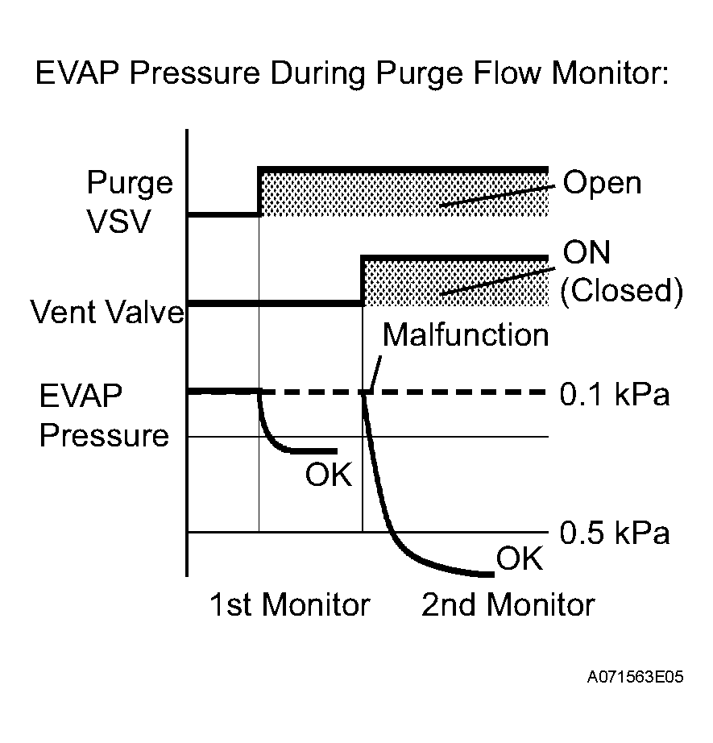

Monitor Description
The 2 monitors, key-off and purge flow, are used to detect malfunctions relating to DTC P0441. The keyoff monitor is initiated by the ECM internal timer, known as the soak timer, 5 hours* after the ignition switch is turned OFF. The purge flow monitor runs while the engine is running.
- Key-off monitor
5 hours* after the ignition switch is turned OFF, the leak detection pump creates negative pressure (vacuum) in the EVAP system. The ECM monitors for leaks and actuator malfunctions based on the EVAP pressure.
HINT:
*: If the engine coolant temperature is not below 35°C (95°F) 5 hours after the ignition switch is turned OFF, the monitor check starts 2 hours later. If it is still not below 35°C (95°F) 7 hours after the ignition switch is turned OFF, the monitor check starts 2.5 hours later.
SEQUENCE DURATION REFERENCESequence Operations Descriptions Duration - ECM activation Activated by soak timer 5, 7 or 9.5 hours after ignition switch OFF. - A Atmospheric pressure measurement Vent valve turned OFF (vent) and EVAP system pressure measured by ECM in order to register atmospheric pressure. If pressure in EVAP system not between 70 kPa and 110 kPa (525 mmHg and 825 mmHg), ECM cancels EVAP system monitor. 10 seconds B First 0.02 inch leak criterion measurement In order to determine 0.02 inch leak criterion, leak detection pump creates negative pressure (vacuum) through reference orifice and then ECM checks if leak detection pump and vent valve operate normally. 60 seconds C EVAP system pressure measurement Vent valve turned ON (closed) to shut EVAP system.
Negative pressure (vacuum) created in EVAP system, and EVAP system pressure then measured.
Write down measured value as it will be used in leak check. If EVAP pressure does not stabilize within 900 seconds, ECM cancels EVAP system monitor.900 seconds(1) D Purge VSV monitor Purge VSV opened and then EVAP system pressure measured by ECM.
Large increase indicates normal.10 seconds E Second 0.02 inch leak criterion measurement After second 0.02 inch leak criterion measurement, leak check performed by comparing first and second 0.02 inch leak criterion.
If stabilized system pressure higher than second 0.02 inch leak criterion, ECM determines that EVAP system leaking.60 seconds F Final check Atmospheric pressure measured and then monitoring result recorded by ECM. - (1) If only a small amount of fuel is in the fuel tank, it takes longer for the EVAP pressure to stabilize.  Courtesy of © TOYOTA, LICENSE AGREEMENT TMS1002
Courtesy of © TOYOTA, LICENSE AGREEMENT TMS1002- Purge VSV stuck open
In operation C, the leak detection pump creates negative pressure (vacuum) in the EVAP system. The EVAP system pressure is then measured by the ECM using the canister pressure sensor. If the stabilized system pressure is higher than [second 0.02 inch leak criterion x 0.2], the ECM interprets this as the purge Vacuum Switching Valve (VSV) being stuck open. The ECM illuminates the MIL and sets the DTC (2 trip detection logic).
- Purge VSV stuck closed
In operation D, the canister pressure sensor measures the EVAP system pressure. The pressure measurement for the purge VSV monitor begins when the purge VSV is turned ON (open) after the EVAP leak check. When the measured pressure indicates an increase of 0.3 kPa (2.25 mmHg) or more, the purge VSV is functioning normally. If the pressure does not increase, the ECM interprets this as the purge VSV being stuck closed. The ECM illuminates the MIL and sets the DTC (2 trip detection logic).
- Purge VSV stuck open
- Purge flow monitor

Courtesy of © TOYOTA, LICENSE AGREEMENT TMS1002The purge flow monitor consists of the 2 step monitors. The 1st monitor is conducted every time and the 2nd monitor is activated if necessary.
- The 1st monitor
While the engine is running and the purge VSV is ON (open), the ECM monitors the purge flow by measuring the EVAP pressure change. If negative pressure is not created, the ECM begins the 2nd monitor.
- The 2nd monitor
The vent valve is turned ON (closed) and the EVAP pressure is then measured. If the variation in the pressure is less than 0.5 kPa (3.75 mmHg), the ECM interprets this as the purge VSV being stuck closed, illuminates the MIL and sets DTC P0441 (2 trip detection logic).
- The 1st monitor
Atmospheric pressure check:
In order to ensure reliable malfunction detection, the variation between the atmospheric pressure before and after conduction of the purge flow monitor is measured by the ECM.